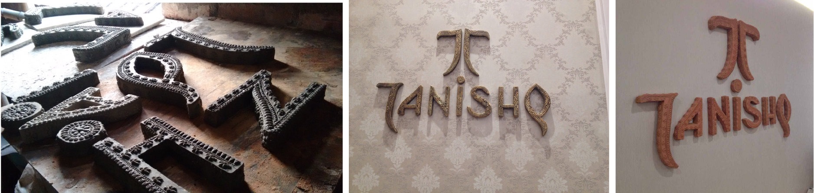
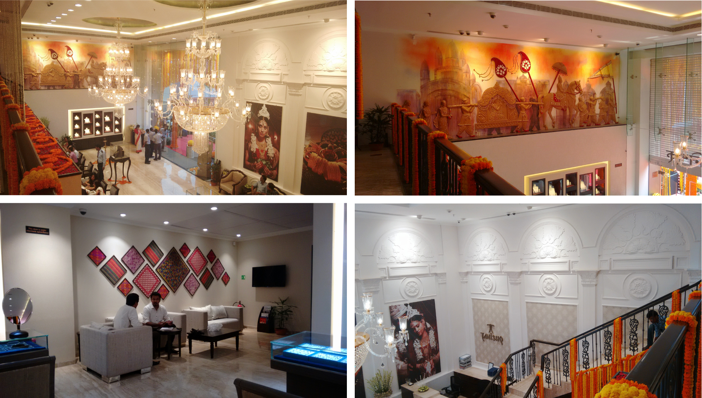
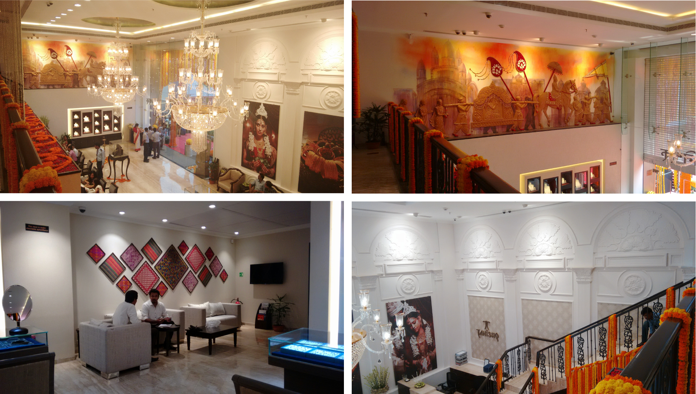

Tanishq Store Design
Tanishq is India's most admired jewelry brand, with stores in all cities in the country. I was part of Tanishq Design Studio, headed by Balaji Natarajan, and I worked on the craft and culture based approach to customising retail stores. The objective was two-fold, to reflect the local architecture, culture, arts and wedding traditions, and also to use sutainable material, working with trained craftspeople in the region.
The first such store to reflect this mission was at Camac Street, Kolkata. I designed the store, layouts, facade, display design and curated art installations.
The essense of this store's design is captured in this beautiful video:
Design and Process:
Branding with local crafts such as Dhokra and terracota
 

Spent about 8 months on this project, 4 for research and developing relationships with artists, craftspeople, understanding wedding cultures in India, and refining the design objectives.
The store lauched in Camac Street, Kolkata to a lot of media coverage, was on the cover of a leading retail magazine, and won several awards.
Team:Balaji Natarajan, Chitti Babu